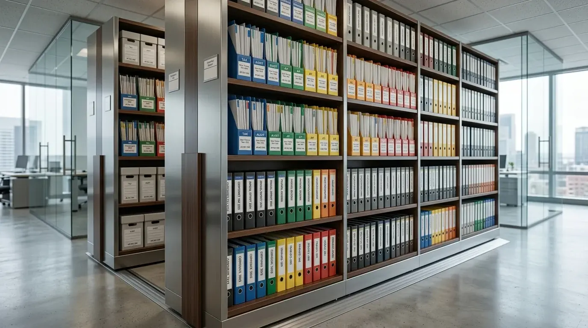

1. Mengapa Menyusun Dokumen Keuangan Kantor Krusial Bagi Bisnis?
Menyusun dokumen keuangan kantor secara disiplin mencegah sanksi denda perpajakan, menghindari kebocoran kas operasional, dan mempercepat validasi laporan laba rugi.
Dalam ekosistem operasional perkantoran modern, setiap lembar kertas yang memuat nominal transaksi memiliki nilai yuridis. Kegagalan melampirkan bukti pengeluaran yang sah pada buku kas kecil bukan sekadar menimbulkan selisih pembukuan internal, melainkan berisiko menggugurkan biaya operasional sebagai pengurang penghasilan bruto (biaya non-deductible) di mata pemeriksa pajak Direktorat Jenderal Pajak (DJP).
Menurut survei Indonesian Corporate Administrative Efficiency (2025/2026), staf administrasi rata-rata kehilangan 120 jam per tahun hanya untuk mencari dokumen yang salah letak atau tidak terdaftar dalam indeks arsip. Dengan standardisasi filing fisik yang kokoh, perusahaan dapat mengalihkan fokus sumber daya manusia untuk analisis strategi ekspansi daripada berkutat menyelesaikan rekonsiliasi berkas yang tercecer.
- Terapkan Aturan Segregasi Dokumen: Jangan pernah mencampurkan berkas kas masuk (AR) dan kas keluar (AP) dalam satu binder ordner yang sama.
- Gunakan Kode Unik Transaksi: Berikan cap nomor voucher bukti kas (misal: BKK-2609-001) yang tertulis identik pada dokumen pendukung invoice dan kwitansi.
- Duplikasi Berkas Termal: Segera fotokopi bukti struk BBM, tol, atau pengeluaran logistik harian sebelum disimpan dalam lemari arsip ber-AC.
2. Bagaimana Klasifikasi Berkas Pajak dan Bukti Transaksi yang Benar?
Klasifikasi berkas pajak yang efektif membagi dokumen ke dalam ordner masa pajak bulanan, SPT tahunan, serta pemisahan faktur pajak masukan dan keluaran.
Penataan dokumen perpajakan membutuhkan ketelitian ekstra karena menyangkut hak kredit pajak perusahaan. Setiap Faktur Pajak Masukan harus disatukan dengan Invoice asli dari vendor, Surat Jalan pengiriman barang, dan bukti potong pajak penghasilan yang relevan. Jika transaksi melibatkan jasa konstruksi atau pemeliharaan gedung, pastikan Bukti Potong PPh Pasal 4 ayat (2) terlampir rapi bersama salinan Surat Perjanjian Kerja (SPK).
Untuk memudahkan tim keuangan, bagi sistem filing menjadi 4 kategori warna map ordner:
- Ordner Biru (Perpajakan): Berisi SPT Masa PPN, SPT Tahunan Badan, bukti SSP, dan e-Billing pelunasan bank.
- Ordner Merah (Hutang Usaha / Accounts Payable): Berisi tagihan vendor, invoice jatuh tempo, Purchase Order (PO), dan voucher transfer.
- Ordner Hijau (Piutang Usaha / Accounts Receivable): Berisi salinan invoice penagihan klien, kwitansi resmi bermeterai, dan bukti potong dari klien.
- Ordner Hitam/Abu-abu (Payroll & Legal): Berisi slip gaji bulanan, bukti potong PPh 21, dan berkas legalitas perusahaan (NIB/NPWP/PBG).

Penyusunan ordner dengan sistem kode warna dan rak arsip modular memastikan berkas perpajakan aman dan cepat diakses saat audit tahunan.
3. Tabel Komparasi: Pengarsipan Konvensional vs Sistem Standar Akuntansi Modern
Membandingkan metode penyimpanan berkas tradisional dengan sistem filing standar akuntansi memperlihatkan peningkatan signifikan pada keamanan data dan kecepatan pencarian.
| Aspek Evaluasi Dokumen | Metode Konvensional / Menumpuk | Sistem Standar Akuntansi (Filing Korporat) |
|---|---|---|
| Struktur Pengelompokan | Campur aduk berdasarkan tanggal masuk saja | Segregasi 4 Klaster: Pajak, AP, AR, dan Payroll terindeks |
| Perlindungan Bukti Termal | Dibiarkan terbuka hingga tulisan memudar | Fotokopi HVS + Sheet Protector bebas asam (acid-free) |
| Kecepatan Temu Kembali (Audit) | Rata-rata 30–45 menit per transaksi | Kurang dari 3 menit dengan sistem kode ordner numerik |
| Kepatuhan Hukum (Masa Retensi) | Kerap hilang sebelum 3 tahun | Terjamin rapi dan utuh melewati masa retensi 10 tahun |
| Pengadaan & Kualitas ATK | Beli satuan tidak seragam dan ringkih | Paket ATK Bulanan korporat spesifikasi tebal & kokoh |
4. Bagaimana Cara Arsip Kwitansi Invoice Agar Siap Audit?
Tata cara arsip kwitansi invoice yang siap audit mewajibkan pencocokan 3 arah (Three-Way Matching) antara Purchase Order, Surat Jalan, dan Faktur Penjualan.
Prosedur audit internal selalu menguji apakah pengeluaran dana benar-benar terjadi dan barang yang dibeli telah diterima sesuai spesifikasi. Langkah-langkah teknis pengarsipan kwitansi invoice meliputi:
- Verifikasi Dokumen Induk: Pastikan lembar Invoice asli dilampiri PO bernomor resmi dan Surat Penerimaan Barang (Good Receipt Notes).
- Pembubuhan Meterai Elektronik/Tempel: Sesuai ketentuan bea meterai, transaksi bernilai di atas Rp5.000.000 wajib bermeterai sah pada kwitansi pelunasan.
- Penempelan Cap "LUNAS / PAID": Berikan stempel tanda lunas yang mencantumkan tanggal pembayaran, nama bank pembayar, dan nomor referensi giro/rekening.
- Penyusunan Kronologis Terbalik: Letakkan transaksi terbaru di urutan paling depan binder ordner agar riwayat mutasi bulanan mudah ditelusuri.
Untuk mendukung kerapian ini, pastikan kantor Anda menggunakan perlengkapan filing berkualitas tinggi yang tahan banting. Dapatkan penawaran paket pengadaan alat tulis dan sistem filing terintegrasi melalui tautan kami: Beli Paket ATK Bulanan & Filing System Kantor.
5. Checklist Kelengkapan Filing System & ATK Esensial Kantor
Kelancaran tata kelola arsip didukung oleh ketersediaan ATK esensial berkualitas premium seperti ordner lever arch, pembatas divider, dan perforator heavy-duty.
Menjaga ketersediaan perlengkapan kantor secara berkala mencegah staf administrasi menunda proses pengarsipan. Berikut adalah daftar peralatan filing yang wajib tersedia di setiap divisi keuangan dan operasional perusahaan:
- Ordner Lever Arch 7,5 cm & 5 cm: Berbahan karton tebal berlapis PVC tahan air dengan mekanisme pengunci besi presisi.
- Divider Plastik Berwarna (1-12 & A-Z): Memudahkan indeksasi dokumen per bulan kalender atau urutan nama rekanan.
- Sheet Protector Anti-Glare Bebas Asam: Melindungi kwitansi asli dari gesekan, debu, dan cairan tanpa merusak kertas.
- Perforator Kertas 2 Lubang Heavy Duty: Mampu melubangi hingga 50 lembar sekaligus dengan presisi jarak lubang standar internasional.
- Stempel Tanggal & Tinta Pigmen Permanen: Menjamin tanda terima dan tanggal validasi tidak pudar meski disimpan belasan tahun.
Pertanyaan yang Sering Diajukan (FAQ)
Kesimpulan Praktis
Menyusun dokumen keuangan kantor secara tertib dan disiplin adalah fondasi utama keamanan hukum, transparansi operasional, dan kelancaran audit perusahaan Anda. Melindungi setiap bukti fisik kwitansi, invoice, dan berkas perpajakan dengan sistem filing standar memastikan kelangsungan bisnis yang bebas dari risiko denda pajak dan kerugian operasional.
Tingkatkan efisiensi administrasi kantor Anda sekarang juga dengan perlengkapan filing terstandarisasi dan pasokan ATK korporat terpercaya dari tim Kontraktor Bangunan.